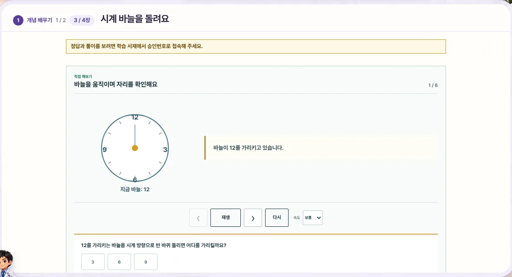
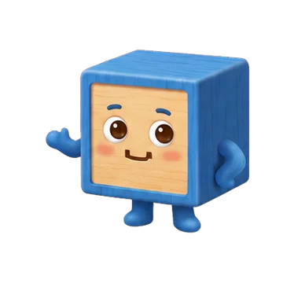
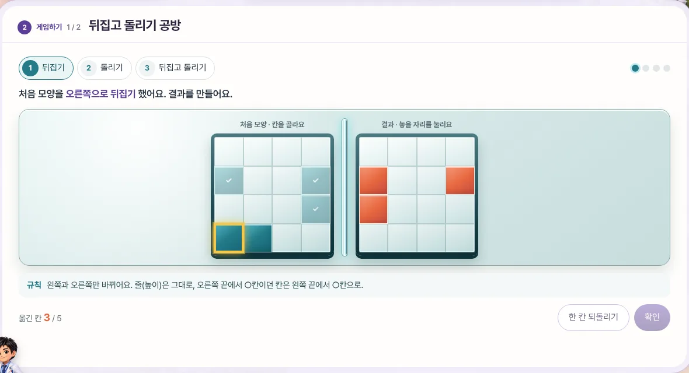
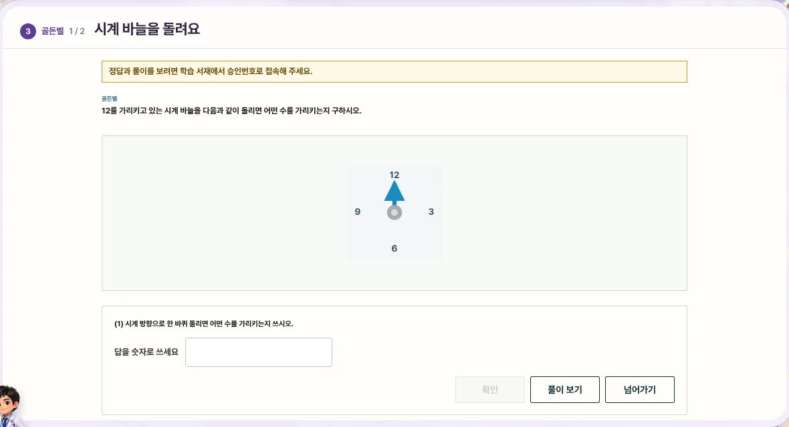
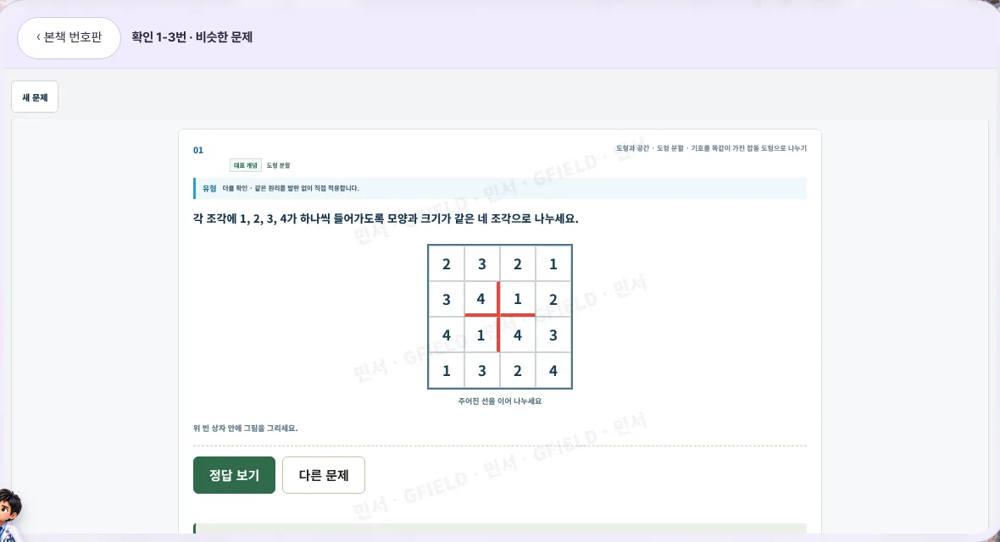
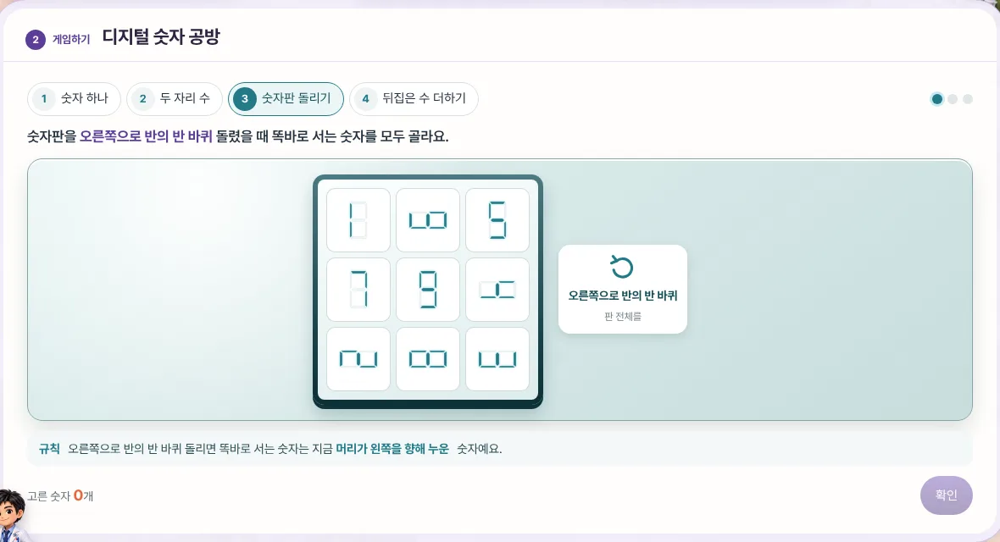
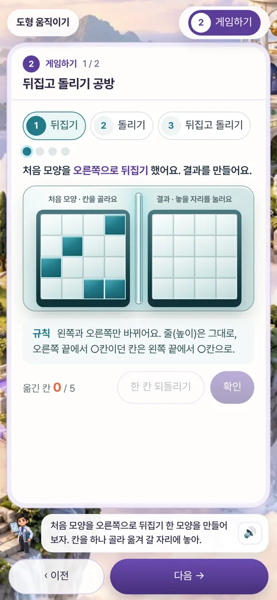

개념 배우기
골든벨 대표 문제로 개념을 배워요. 생각할 문제 → 상황 → 직접 해 보기 → 정리를 한 장씩 넘겨요.
- 덩어리마다 한 장, 아래로 길게 내리지 않아요
- 독쌤이 장마다 할 일을 말해 줘요

생각하는 섬을 함께 건너 봐요.
개념을 배우고, 게임으로 손에 익히고, 골든벨로 확인한 뒤 본책을 풀어요.
한 섬씩 건너다 보면 스스로 설명할 수 있게 돼요.

입장하기WELCOME TO
ONE LESSON · FOUR ISLANDS
단원을 개념 묶음대로 두세 차시로 나눴어요. 한 장씩 넘기며 공부하고, 다 마치면 다음 섬으로 가요.
골든벨 대표 문제로 개념을 배워요. 생각할 문제 → 상황 → 직접 해 보기 → 정리를 한 장씩 넘겨요.

본책 실제 문제 수준의 게임이에요. 보기를 고르지 않고, 칸과 막대를 하나씩 옮겨 결과를 직접 만들어요.

골든벨 문항을 한 문제씩 풀어요. 다 풀면 독쌤이 칭찬하고 다음 섬으로 넘어가요.

본책은 종이로 풀어요. 모르는 번호만 누르면 같은 유형의 비슷한 문제가 그 자리에 떠요.

PLAY THE REAL PROBLEM
문제은행이 본책 문제를 만드는 규칙을 게임도 그대로 써요. 그래서 게임에서 익힌 움직임이 본책 문제에 그대로 맞아요.
1권 1단원 1차시
4×4 판에 흩어진 칸을 뒤집고, 돌리고, 뒤집은 다음 돌려요. 중간 모양부터 차례로 만들어요.

1권 1단원 2차시
켜진 막대를 옮겨 뒤집힌 숫자를 만들고, 숫자판을 돌려 똑바로 서는 수를 찾고, 뒤집어 읽은 수를 더해요.
ANYWHERE
화면이 작으면 그림 틀이 얇아지고, 지금 단계 하나만 위에 보여요. 독쌤 말은 단추 바로 위에 두 줄로 남아요.

10 BOOKS · 40 UNITS
권을 누르면 그 권의 단원과 차시가 열려요.
FOR TEACHERS